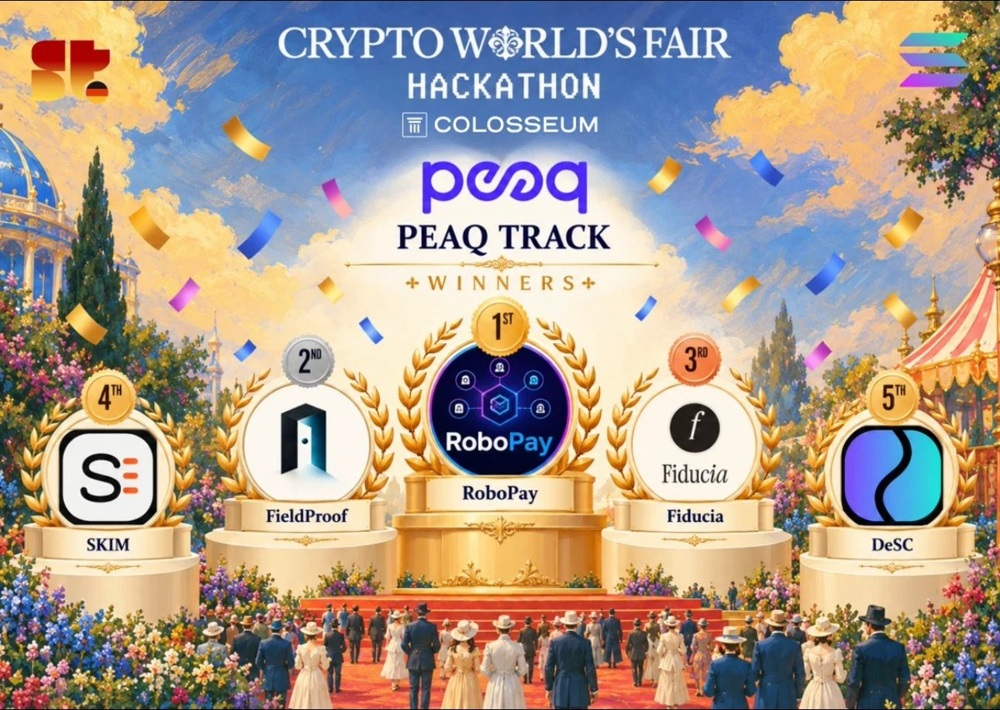

RoboPay wins the peaq track at Crypto World’s Fair
RoboPay took first place in the peaq track of the Crypto World’s Fair Hackathon by Colosseum. FieldProof, Fiducia, SKIM and DeSC followed in places two to five.

RoboPay won first place in the peaq track of the Crypto World’s Fair Hackathon by Colosseum. Our entry was for the Germany side track “Advance the Machine Economy with peaq”, which drew 10 submissions.
Congratulations to the other winners: FieldProof took 2nd place, Fiducia 3rd, SKIM 4th and DeSC 5th.
What we showed
RoboPay is a payment layer for robots and AI agents. In our prototype, a delivery car, a PiCar-X, gets paid from a Solana escrow once it proves it delivered a parcel. The buyer locks 0.2 SOL, the car drives to the box and scans its QR code, and the car signs the delivery on-chain. Then the escrow releases the money.
Anyone can check that signature in the Solana Explorer. No invoice, no click and no bank is involved.
Why peaq fits
A payment only makes sense if you know whom to pay. A robot has no bank account and no passport, so RoboPay uses the car’s Machine-NFT on peaq as its identity. That identity is how the payout finds the owner. Payouts that follow the Machine-NFT owner are built and in testing.
Staex keeps the car securely connected while it drives, and Solana holds the money in escrow until the delivery is proven.
Thank you
Thank you to peaq and the Crypto World’s Fair team for the track and the feedback, to Staex and Superteam Germany for their support, and to the Machine Economy Lab at HTW Berlin and our supervisor Prof. Dr. Alexandra Mikityuk.
What comes next
The QR handover works on the car today, but a copied code is still a weakness. Next we add a letterbox co-signature with a weight sensor, run 30+ outdoor GPS tests, and work on an on-chain fee split and security hardening. The goal is to turn this research group into a company.
You can watch the demo on X, read how a delivery pays on How it works, or look at the code on GitHub.